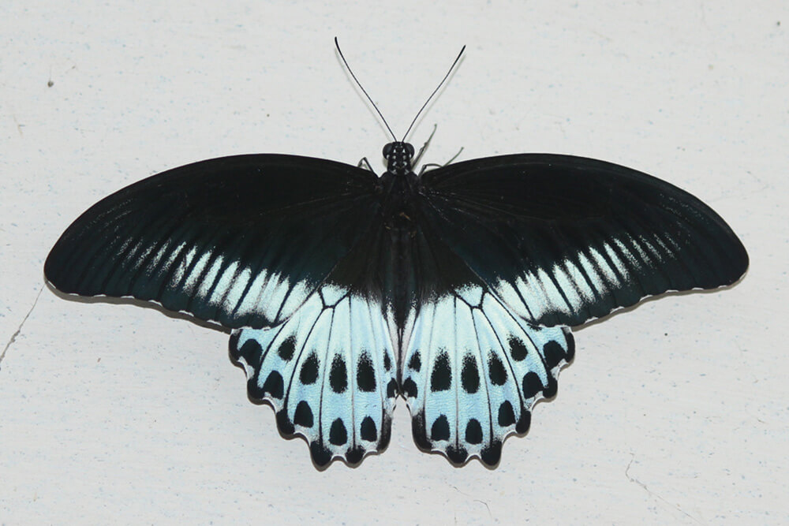
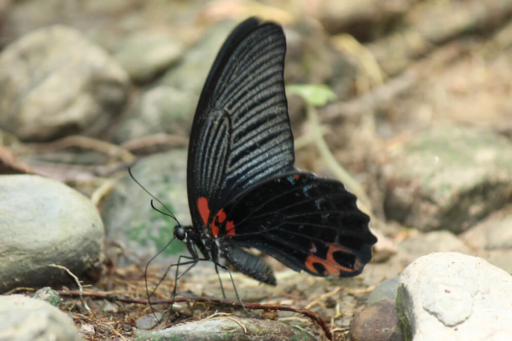
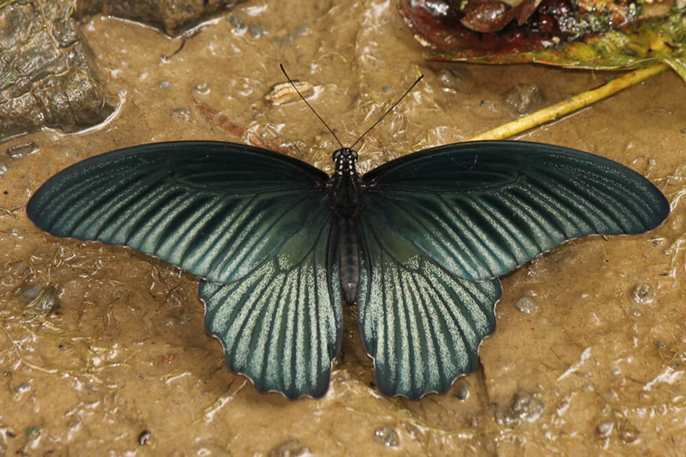
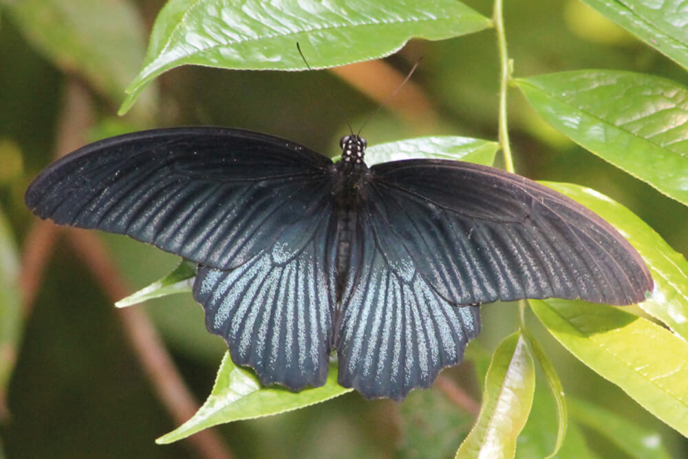
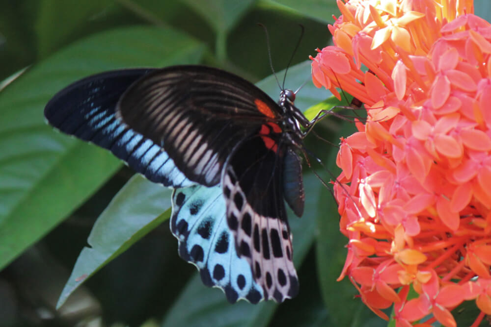
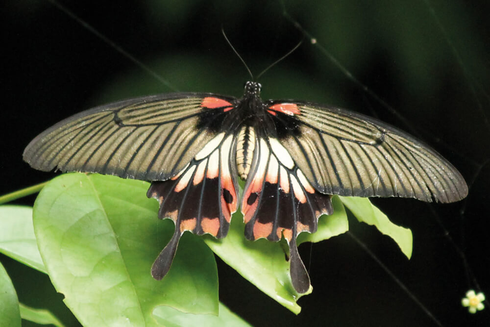
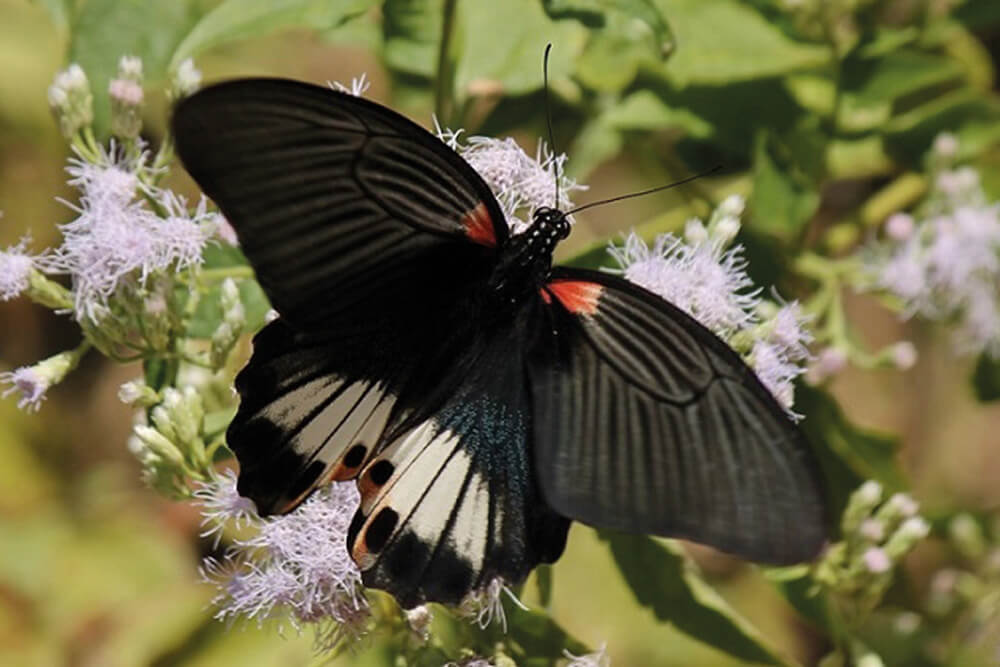
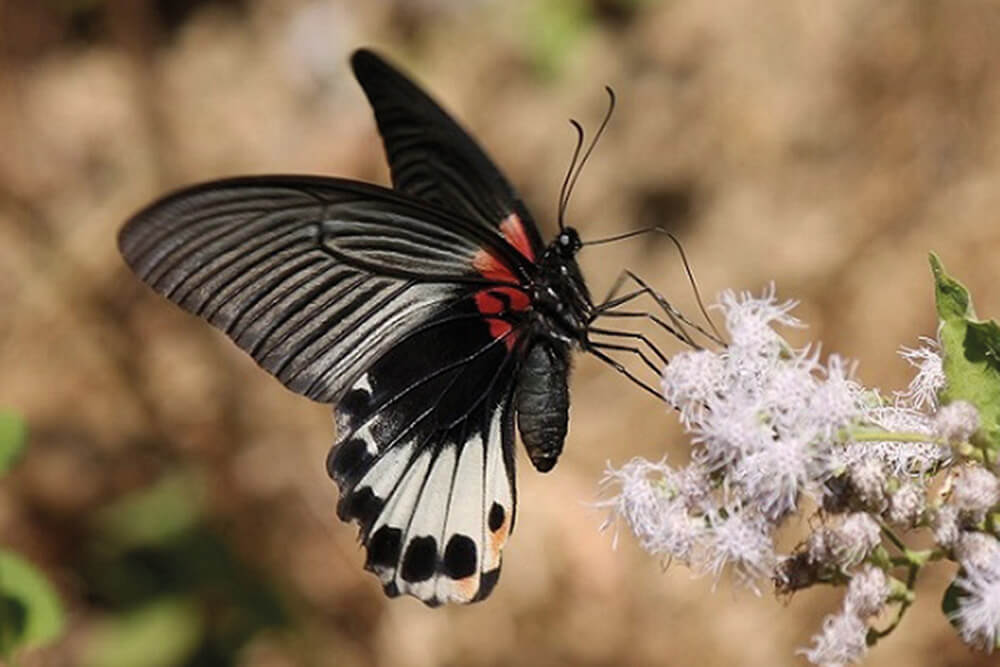
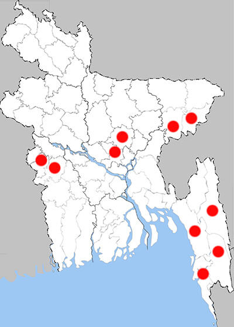

Papilio agenor
Grand Mormon








Recorded Place:
Rangamati, Bandarban, Cox’s Bazar, Sylhet, Chuadanga, Moulvibazar, Chattagram, Dhaka, Habiganj, Kushtia, Bogura, Faridpur, Gaipur, Khulna, Habiganj, Rajshahi, Chapainawabganj, Jhenaidah

Literature Records:
Smetacek, P., A.M. Cotton & M. Markhasiov (2024). Papilionid Butterflies of Indian Subcontinent. Revised, concise edition. 148 pp. Butterfly Research Trust, Bhimtal, India..